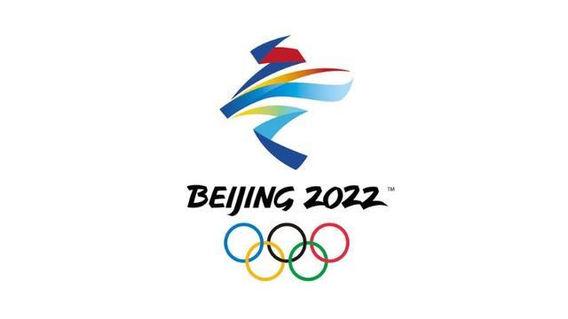
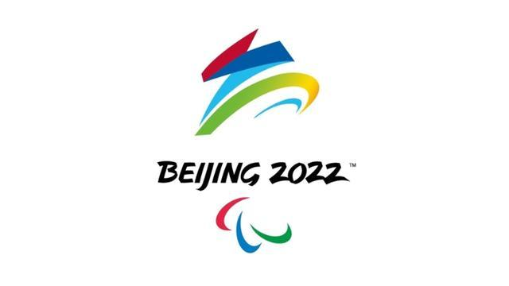
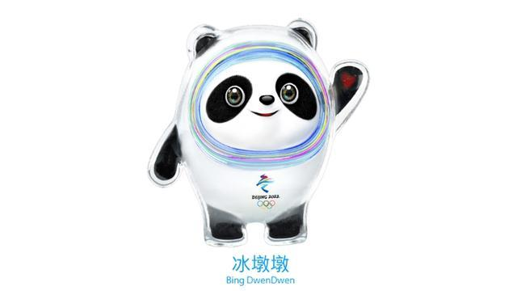
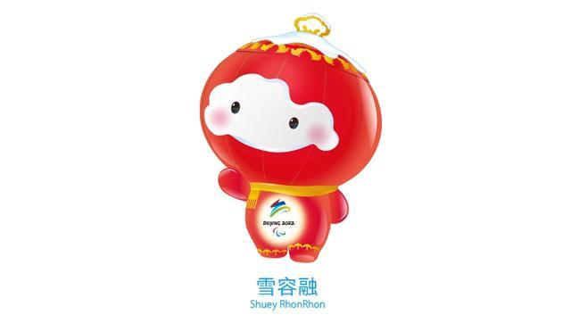

国韵冬奥——这些冬奥元素 尽显中华文化底蕴
【来源】：互联网
文化是一个国家、一个民族的灵魂。北京冬奥会上，处处都充满着丰富多彩的“中国风”元素，从冬奥会徽、冬奥吉祥物到冬奥体育图标的构思设计，再到奖牌、制服的精巧设计，无不折射出中华文化之美和浓郁的文化自信。
会徽

北京2022年冬奥会会徽——冬梦
冬奥会徽“冬梦”以汉字“冬”为灵感来源，运用中国书法的艺术形态，将厚重的东方文化底蕴与国际化的现代风格融为一体。 图形上半部分展现滑冰运动员的造型，下半部分表现滑雪运动员的英姿。中间舞动的线条代表举办地起伏的山峦、赛场、冰雪滑道和节日飘舞的丝带。 会徽以蓝色为主色调，寓意梦想与未来，以及冰雪的明亮纯洁。红黄两色源自中国国旗，代表运动的激情、青春与活力。 “BEIJING 2022”字体的形态上汲取了中国书法与剪纸的特点，增强了字体的文化内涵和表现力，也体现了与会徽图形的整体感和统一性。

北京2022年冬残奥会会徽——飞跃
冬残奥会会徽设计展现了汉字“飞”的动感和力度，巧妙地幻化成一个向前滑行、冲向胜利的运动员，形象化地展现了轮椅等冬残奥会的特殊运动器械形态。 上半部分线条刚劲曲折，下半部分柔美圆润，寓意运动员经过顽强拼搏、历经坎坷最终达到目标获得圆满成功。
吉祥物

北京冬奥会吉祥物“冰墩墩”，以熊猫为原型进行设计创作。将熊猫的形象与富有超能量的冰晶外壳相结合，体现了冬季冰雪运动和现代科技特点。 头部外壳造型取自冰雪运动头盔，装饰彩色光环，其灵感源自于北京冬奥会的国家速滑馆——“冰丝带”，流动的明亮色彩线条象征着冰雪运动的赛道和5G高科技；左手掌心的心形图案，代表着主办国对全世界朋友的热情欢迎。 整体形象酷似航天员，寓意创造非凡、探索未来，体现了追求卓越、引领时代，以及面向未来的无限可能。

北京冬残奥会吉祥物“雪容融”以灯笼为原型进行设计创作。灯笼，是世界公认的“中国符号”，具有2000多年历史，代表着收获、喜庆、温暖和光明。 顶部的如意造型象征吉祥幸福；和平鸽和天坛构成的连续图案，意味着和平友谊，突出了举办地的特色；装饰图案融入了中国传统剪纸艺术;面部的雪块既代表“瑞雪兆丰年”的寓意，又体现了拟人化的设计，凸显吉祥物的可爱。 灯笼以“中国红”为主色调，渲染了2022年中国春节的节日气氛，身体发出光芒，寓意为点亮梦想，温暖世界，代表着友爱、勇气和坚强，体现了冬残奥运动员的拼搏精神和激励世界的冬残奥会理念。
浏览量：34

- 联系
我们

工作日：
早9:00-晚18:00
杨老师：
400-888-8888